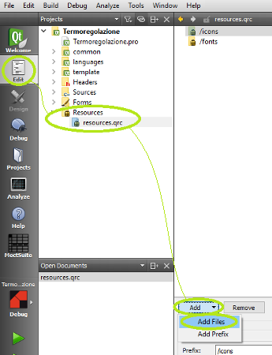

To include an external element (image...) to the project, it is necessary to add to the resource file. To do this follows these steps:
Double click .qrc file in the “Resources” section in the project structure window;

Possibly choose a folder where to save the resource;
Press “Add” key to add the new resource;
Save resources.qrc file.
Now the added object can be accessed in the project.